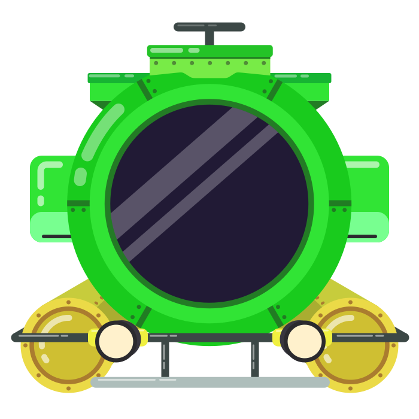

✦
Submersible mission
Into the Abyss
Current zone
Surface
↓
Descending
Scroll to change direction
Progress saved

Sandbox mode lets you inspect milestones without waiting for the full descent. Your main mission progress stays safe.